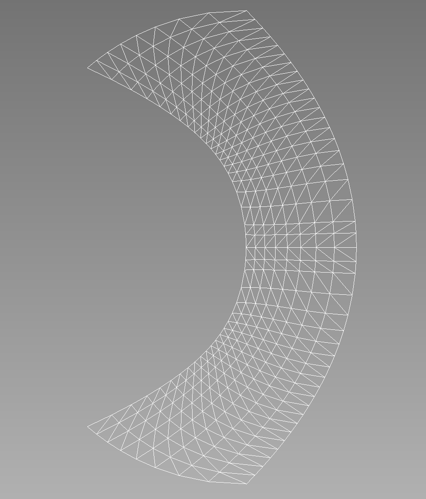

- gammaGamma parameter
C++ Type:Real
Unit:(no unit assumed)
Controllable:No
Description:Gamma parameter
- kmaxValue of k on the inner wall.
C++ Type:Real
Unit:(no unit assumed)
Controllable:No
Description:Value of k on the inner wall.
- kminValue of k on the outer wall.
C++ Type:Real
Unit:(no unit assumed)
Controllable:No
Description:Value of k on the outer wall.
- n_extra_q_ptsHow many 'extra' points should be inserted in the final element *in addition to* the equispaced q points.
C++ Type:int
Controllable:No
Description:How many 'extra' points should be inserted in the final element *in addition to* the equispaced q points.
- num_k_ptsHow many points in the range k=(kmin, kmax).
C++ Type:int
Controllable:No
Description:How many points in the range k=(kmin, kmax).
- num_q_ptsHow many points to discretize the range q = (0.5, k) into.
C++ Type:int
Controllable:No
Description:How many points to discretize the range q = (0.5, k) into.
RinglebMeshGenerator
Creates a mesh for the Ringleb problem.
Overview
This mesh can be applied to a Ringleb problem. This problem tests the spatial accuracy of high-order methods. The flow is transonic and smooth. The geometry is also smooth, and high-order curved boundary representation appears to be critical.
Governing Equations
The governing equations are the 2D Euler equations with .
Geometry
Let be a streamline parameter, i.e., on each streamline. The two stream lines for the two wall boundaries are for the inner wall, and for the outer wall. Let be the velocity magnitude. For each fixed , , the variable varies between and . For each , define the speed of sound , density , pressure , and a quantity denoted by by:
For each pair , set:
Mesh Example
For example, let's consider the following input file:
[Mesh]
[./ringleb]
type = RinglebMeshGenerator
kmin = 0.7
num_k_pts = 9
num_q_pts = 20
kmax = 1.2
n_extra_q_pts = 2
gamma = 1.4
triangles = true
[]
[]
The corresponding mesh looks like this:

Input Parameters
- inflow_bid1The boundary id to use for the inflow
Default:1
C++ Type:short
Controllable:No
Description:The boundary id to use for the inflow
- inner_wall_bid2The boundary id to use for the inner wall
Default:2
C++ Type:short
Controllable:No
Description:The boundary id to use for the inner wall
- outer_wall_bid4The boundary id to use for the outer wall
Default:4
C++ Type:short
Controllable:No
Description:The boundary id to use for the outer wall
- outflow_bid3The boundary id to use for the outflow
Default:3
C++ Type:short
Controllable:No
Description:The boundary id to use for the outflow
- trianglesFalseIf true, all the quadrilateral elements will be split into triangles
Default:False
C++ Type:bool
Controllable:No
Description:If true, all the quadrilateral elements will be split into triangles
Optional Parameters
- enableTrueSet the enabled status of the MooseObject.
Default:True
C++ Type:bool
Controllable:No
Description:Set the enabled status of the MooseObject.
- save_with_nameKeep the mesh from this mesh generator in memory with the name specified
C++ Type:std::string
Controllable:No
Description:Keep the mesh from this mesh generator in memory with the name specified
Advanced Parameters
- nemesisFalseWhether or not to output the mesh file in the nemesisformat (only if output = true)
Default:False
C++ Type:bool
Controllable:No
Description:Whether or not to output the mesh file in the nemesisformat (only if output = true)
- outputFalseWhether or not to output the mesh file after generating the mesh
Default:False
C++ Type:bool
Controllable:No
Description:Whether or not to output the mesh file after generating the mesh
- show_infoFalseWhether or not to show mesh info after generating the mesh (bounding box, element types, sidesets, nodesets, subdomains, etc)
Default:False
C++ Type:bool
Controllable:No
Description:Whether or not to show mesh info after generating the mesh (bounding box, element types, sidesets, nodesets, subdomains, etc)